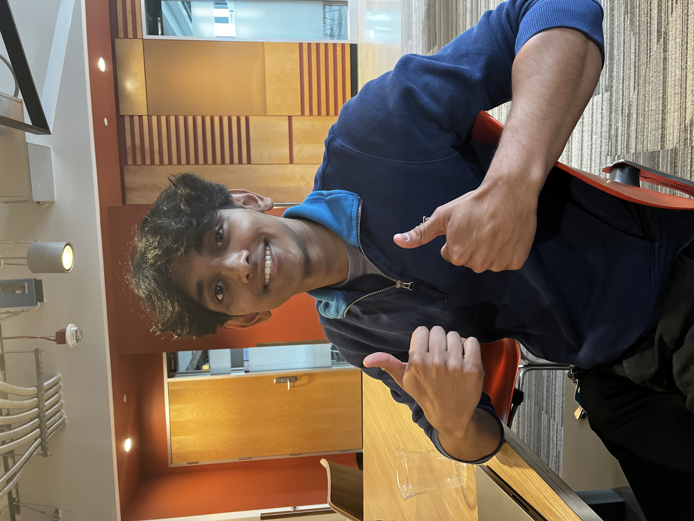

|
Madhavan Iyengar
Hi! My name's Madhavan, I'm a senior at the University of Michigan studying Computer Science.
I'm currently a student researcher with the MMINT Lab and Head TA for EECS 445 (Intro to Machine Learning). I previously interned as a software developer at Amazon in the Alexa Smart Home org, where I helped launch the Echo Hub.
I also love classical piano and spend a good chunk of my free time in the practice rooms at UM's music school.
Email /
Twitter /
LinkedIn
|

|
|
|
Built Different: Tactile Perception to Overcome Cross-Embodiment Capability Differences in Collaborative Manipulation
William van den Bogert, Madhavan Iyengar, Nima Fazeli
Preprint 2024
project page /
arXiv
We present an approach that uses tactile sensors to transfer policies between robots that have vastly different sensing capabilities. We show how our method can enable a cooperative task where a robot and human must work together to maneuver objects through space.
|
|
|
3D-GRAND: A Million-Scale Dataset for 3D-LLMs with Better Grounding and Less Hallucination
Jianing Yang, Xuweiyi Chen, Nikhil Madaan, Madhavan Iyengar, Shengyi Qian, David F. Fouhey, Joyce Chai
Preprint 2024
project page /
arXiv
We address the lack of large-scale datasets that provide dense grounding between language and 3D scenes by introducing 3D-GRAND, a dataset comprising of 40,087 household scenes paired with 6.2 million densely-grounded scene-language instructions.
|
|
|
LLM-Grounder: Open-Vocabulary 3D Visual Grounding with Large Language Model as an Agent
Jianing Yang, Xuweiyi Chen, Shengyi Qian, Nikhil Madaan, Madhavan Iyengar, David F. Fouhey, Joyce Chai
ICRA 2024
project page /
arXiv
We present the first method capable of localizing novel objects in 3D scenes using Neural Radiance Field (NeRF) and Large Language Models (LLMs) through iterative, natural language-based interactions.
|
Before discovering AI, I was interested in mathematical modeling of disease spread.
|
|
Front propagation in a spatial system of weakly interacting networks
Evgeniy Khain, Madhavan Iyengar
Physical Review E, 2023
We address the propagation of an epidemic through a metapopulation model, highlighting the impact of migration and node degree distribution on the spread.
|
|
|
Epidemic on a changing network: College outbreaks and vaccination
Madhavan Iyengar, Varun Nimmagadda, Evgeniy Khain
International Journal of Modern Physics C, 2022
We explore the dynamics of disease outbreaks on college campuses, modeling interactions between extroverts and introverts. We also examine vaccination strategies, considering prioritization based on risk or contact rates to mitigate an outbreak.
|
|